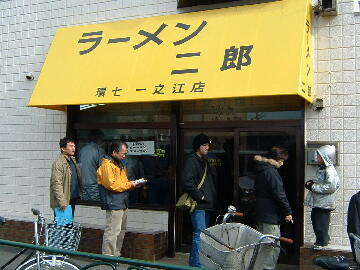
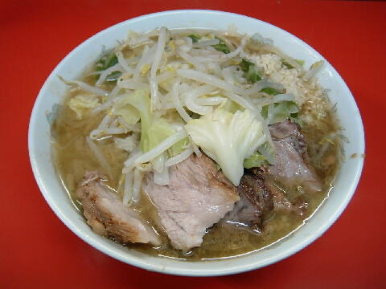
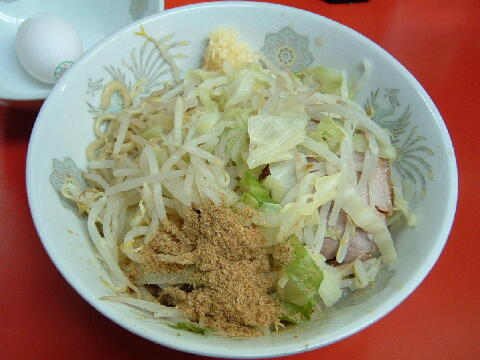

江戸川区 一之江 8-3-4
水
11：00〜14：00 17：30〜20：30
土・日・祝 10：00〜14：00

ぶた２枚入り小ラーメン 650円、ぶた５枚入り小ラーメン 750円、ぶたダブル小ラーメン 850円
ぶた２枚入り大ラーメン 750円、ぶた５枚入り大ラーメン 850円、ぶたダブル大ラーメン 950円
汁なしラーメン 650円、汁なし大ラーメン 750円
豚増し 100円、豚ダブル 200円
味付玉子 100円、生たまご 50円
店員は、任侠映画の主人公のような店主と助手。
白コショウ（ギャバン）、黒コショウ（ギャバン）、トウガラシ。
レンゲ有。ティッシュ無。名刺無。
BGMは、FM小岩。
トッピングは、ニンニク，ヤサイ，カラメ，アブラ。アブラはプリプリ。ヤサイはあまり増えない。
汁なしのみ魚粉のトッピングが可能。
ラーメン二郎 環七一之江店 環七一之江店のTwitter
「ラーメン二郎 一之江」でヤフー検索
「ラーメン二郎 一之江」でヤフーリアルタイム検索
「ラーメン二郎 一之江」でグーグル検索

ぶた５枚入り小ラーメン ニンニク
麺は、やや細めのストレート麺で、茹で具合はやや柔らかめ。量は少なめ。
ぶたは、小ぶりだが肉の食感が楽しめるもの。ハズレはパサ。
スープは、優しく乳化したもの。
ヤサイは、モヤシ8：キャベツ2の割合でシャキ。
ニンニクは、中粒に刻んだ生ニンニク。

汁なしラーメン ニンニク魚粉 生たまご
二郎専用しょうゆと二郎の旨味が詰まった油。
これらと麺をゴチャマゼにして食らう。
汁なしのみ魚粉のトッピングが可能。生たまごを溶いて付けながら食べても美味い。
ぶた増し（現金で＋100円）、ダブル（現金で＋200円）も可能。
ＰＣ店